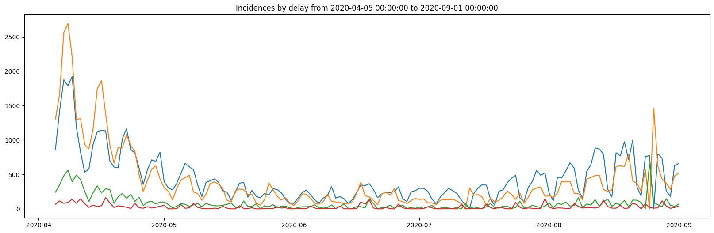
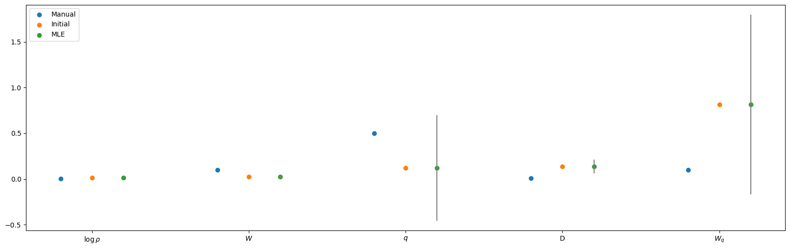
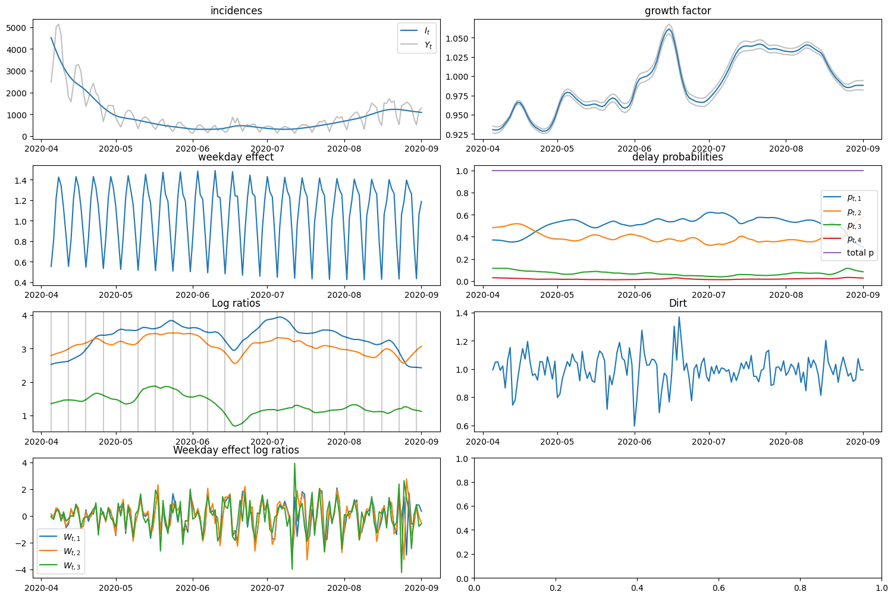
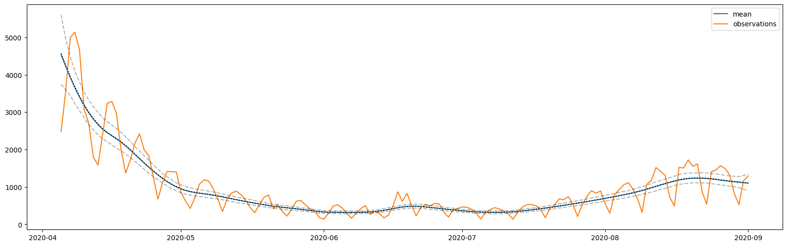

from ssm4epi.models.reporting_delays import (
_model,
to_log_probs,
n_iterations,
N_meis,
N_mle,
N_posterior,
key,
percentiles_of_interest,
)
from pyprojroot.here import hereApplication 1: Showcase
import jax
jax.config.update("jax_enable_x64", True)import pandas as pd
import jax.random as jrn
from jax import numpy as jnp, vmap
from isssm.laplace_approximation import laplace_approximation as LA
from isssm.modified_efficient_importance_sampling import (
modified_efficient_importance_sampling as MEIS,
)
from isssm.estimation import mle_pgssm, initial_theta
from isssm.importance_sampling import (
pgssm_importance_sampling,
ess_pct,
mc_integration,
prediction_percentiles,
normalize_weights,
)
from isssm.kalman import state_mode
import matplotlib.pyplot as plt
import matplotlib as mpl
mpl.rcParams["figure.figsize"] = (20, 6)i_start = 0
np1 = 150
df = pd.read_csv(here() / "data/processed/RKI_4day_rt.csv")
dates = pd.to_datetime(df.iloc[i_start : i_start + np1, 0])
y = jnp.asarray(df.iloc[i_start : i_start + np1, 1:].to_numpy())
plt.plot(dates, y)
plt.title(f"Incidences by delay from {dates[0]} to {dates[np1-1]}")
plt.show()
theta_manual = jnp.log(
# s2_log_rho, s2_W, s2_q, s2_M, s2_Wq
jnp.array([0.001**2, 0.1**2, 0.5**2, 0.01**2, 0.1**2])
)
aux = (np1, 4)
intial_result = initial_theta(y, _model, theta_manual, aux, n_iterations)
theta_0 = intial_result.x
intial_result message: Optimization terminated successfully.
success: True
status: 0
fun: 5.692800563209859
x: [-8.423e+00 -7.476e+00 -4.235e+00 -3.989e+00 -4.155e-01]
nit: 54
jac: [ 2.887e-08 9.457e-08 -5.196e-07 -2.962e-07 3.264e-07]
hess_inv: [[ 2.131e+02 9.607e+00 ... -2.118e+01 1.953e-01]
[ 9.607e+00 1.806e+02 ... -1.266e+01 5.053e-02]
...
[-2.118e+01 -1.266e+01 ... 1.930e+01 1.878e-01]
[ 1.953e-01 5.053e-02 ... 1.878e-01 8.457e+00]]
nfev: 660
njev: 60key, subkey = jrn.split(key)
mle_result = mle_pgssm(y, _model, theta_0, aux, n_iterations, N_mle, subkey)
theta_hat = mle_result.x
mle_result message: Optimization terminated successfully.
success: True
status: 0
fun: 5.69156747870699
x: [-8.423e+00 -7.476e+00 -4.226e+00 -3.989e+00 -4.133e-01]
nit: 8
jac: [ 1.449e-06 6.521e-07 1.095e-06 9.210e-06 8.151e-06]
hess_inv: [[ 1.002e+00 5.443e-05 ... -9.321e-03 5.726e-02]
[ 5.443e-05 1.000e+00 ... -2.709e-04 2.360e-03]
...
[-9.321e-03 -2.709e-04 ... 1.039e+00 -2.195e-01]
[ 5.726e-02 2.360e-03 ... -2.195e-01 5.780e+00]]
nfev: 110
njev: 10cov_theta_hat = mle_result.hess_inv
theta_to_sd = lambda theta: jnp.sqrt(jnp.exp(theta))
nabla_theta_to_sd = jax.jacfwd(theta_to_sd)(theta_hat)
standard_errors = jnp.sqrt(
jnp.diag(nabla_theta_to_sd @ cov_theta_hat @ nabla_theta_to_sd.T)
)
standard_errors
# save to file
df_standard_errors = pd.DataFrame(
{
"parameter": ["log_rho", "W", "q", "M", "W_q"],
"standard_error": standard_errors,
}
)
df_standard_errors.to_csv(
here() / "data/results/4_showcase_model/standard_errors.csv", index=False
)
df_standard_errors| parameter | standard_error | |
|---|---|---|
| 0 | log_rho | 0.007421 |
| 1 | W | 0.011899 |
| 2 | q | 0.570631 |
| 3 | M | 0.069352 |
| 4 | W_q | 0.977674 |
s_manual = jnp.exp(theta_manual / 2)
s_0 = jnp.exp(theta_0 / 2)
s_mle = jnp.exp(theta_hat / 2)
k = theta_manual.size
plt.scatter(jnp.arange(k) - 0.2, s_manual, label="Manual")
plt.scatter(jnp.arange(k), s_0, label="Initial")
plt.scatter(jnp.arange(k) + 0.2, s_mle, label="MLE")
for i in range(k):
plt.plot(
[jnp.arange(k)[i] + 0.2, jnp.arange(k)[i] + 0.2],
[s_mle[i] - standard_errors[i], s_mle[i] + standard_errors[i]],
color="gray",
)
plt.xticks(jnp.arange(k), ["$\\log \\rho$", "$W$", "$q$", "D", "$W_q$"])
plt.legend()
plt.show()
fitted_model = _model(theta_hat, aux)
proposal_la, info_la = LA(y, fitted_model, n_iterations)
key, subkey = jrn.split(key)
proposal_meis, info_meis = MEIS(
y, fitted_model, proposal_la.z, proposal_la.Omega, n_iterations, N_meis, subkey
)
key, subkey = jrn.split(key)
samples, lw = pgssm_importance_sampling(
y, fitted_model, proposal_meis.z, proposal_meis.Omega, N_posterior, subkey
)
ess_pct(lw)Array(27.93177879, dtype=float64)state_modes_meis = vmap(state_mode, (None, 0))(fitted_model, samples)
x_smooth = mc_integration(state_modes_meis, lw)
x_lower, x_mid, x_upper = prediction_percentiles(
state_modes_meis, normalize_weights(lw), jnp.array([2.5, 50.0, 97.5]) / 100.0
)
# I_smooth = jnp.exp(x_smooth[:, 0])
I_smooth = mc_integration(jnp.exp(state_modes_meis[:, :, 0]), lw)
rho_smooth = jnp.exp(x_smooth[:, 1])
D_smooth = jnp.exp(x_smooth[:, 2])
W_smooth = jnp.exp(x_smooth[:, 3])
log_ratios = x_smooth[:, 9:12]
log_probs = to_log_probs(log_ratios)
weekday_log_ratios = x_smooth[:, jnp.array([12, 18, 24])]
fig, axs = plt.subplots(4, 2, figsize=(15, 10))
axs = axs.flatten()
fig.tight_layout()
axs[0].set_title("incidences")
axs[0].plot(dates, I_smooth, label="$I_t$")
# axs[0].plot(dates, jnp.exp(x_lower[:, 0]), color="black", linestyle="dashed")
axs[0].plot(dates, y.sum(axis=1), label="$Y_t$", color="grey", alpha=0.5)
axs[0].legend()
axs[1].set_title("growth factor")
axs[1].plot(dates, jnp.exp(x_lower[:, 1]), color="grey", alpha=0.5)
axs[1].plot(dates, jnp.exp(x_upper[:, 1]), color="grey", alpha=0.5)
axs[1].plot(dates, rho_smooth, label="$\\log \\rho_t$")
axs[2].set_title("weekday effect")
axs[2].plot(dates, W_smooth, label="$W_t$")
axs[3].set_title("delay probabilities")
axs[3].plot(dates, jnp.exp(log_probs[:, 0]), label="$p_{t, 1}$")
axs[3].plot(dates, jnp.exp(log_probs[:, 1]), label="$p_{t, 2}$")
axs[3].plot(dates, jnp.exp(log_probs[:, 2]), label="$p_{t, 3}$")
axs[3].plot(dates, jnp.exp(log_probs[:, 3]), label="$p_{t, 4}$")
axs[3].plot(dates, jnp.exp(log_probs).sum(axis=1), label="total p")
axs[3].legend()
axs[4].set_title("Log ratios")
axs[4].plot(dates, log_ratios[:, 0], label="$q_{t, 1}$")
axs[4].plot(dates, log_ratios[:, 1], label="$q_{t, 2}$")
axs[4].plot(dates, log_ratios[:, 2], label="$q_{t, 3}$")
for d in dates[::7]:
axs[4].axvline(d, color="black", alpha=0.2)
axs[5].set_title("Dirt")
axs[5].plot(dates, D_smooth)
axs[6].set_title("Weekday effect log ratios")
axs[6].plot(dates, weekday_log_ratios[:, 0], label="$W_{t, 1}$")
axs[6].plot(dates, weekday_log_ratios[:, 1], label="$W_{t, 2}$")
axs[6].plot(dates, weekday_log_ratios[:, 2], label="$W_{t, 3}$")
axs[6].legend()
plt.show()
from isssm.importance_sampling import prediction
def f_I(x, s, y_prime):
return jnp.exp(x[:, 0:1])
percentiles_of_interest = jnp.array(
[0.01, 0.025, *(0.05 * jnp.arange(1, 20)), 0.975, 0.99]
)
mean, sd, quantiles = prediction(
f_I, y, proposal_meis, fitted_model, 1000, key, percentiles_of_interest
)
plt.plot(dates, mean, label="mean")
plt.plot(dates, y.sum(axis=-1), label="observations")
plt.plot(dates, quantiles[0], linestyle="dashed", color="black", alpha=0.3)
plt.plot(dates, quantiles[12], linestyle="dotted", color="black")
plt.plot(dates, quantiles[-1], linestyle="dashed", color="black", alpha=0.3)
plt.legend()
plt.show()
Storing results
# theta
df_theta = pd.DataFrame.from_records(
jnp.vstack([theta_manual, theta_0, theta_hat]),
columns=["log rho", "W", "q", "M", "W_q"],
index=["manual", "initial", "MLE"],
)
df_theta.to_csv(
here() / "data/results/4_showcase_model/thetas.csv", index_label="method"
)
df_theta| log rho | W | q | M | W_q | |
|---|---|---|---|---|---|
| manual | -13.815510557964274 | -4.605170185988091 | -1.3862943611198906 | -9.210340371976182 | -4.605170185988091 |
| initial | -8.422744947041535 | -7.476380687839553 | -4.235408836556227 | -3.988989739128291 | -0.415469351195238 |
| MLE | -8.422784845893636 | -7.47637947934445 | -4.226045296655654 | -3.9887643956162924 | -0.4132628562024761 |
from isssm.importance_sampling import prediction
from jaxtyping import Float, Array
# predictions
# date / name / mean / sd / percentiles
key, subkey_prediction = jrn.split(key)
def f_predict(x, s, y):
probs = jnp.exp(to_log_probs(x[:, 9:12]))
probs_signal = jnp.exp(to_log_probs(s[:, 1:]))
I = jnp.exp(x[:, 0:1])
rho = jnp.exp(x[:, 1:2])
M = jnp.exp(x[:, 2:3])
W = jnp.exp(x[:, 3:4])
runn_W = jnp.convolve(jnp.exp(x[:, 3]), jnp.ones(7) / 7, mode="same")[:, None]
corrected_I = I * runn_W
Wq = jnp.exp(x[:, jnp.array([12, 18, 24])])
return jnp.concatenate(
[I, corrected_I, rho, M, W, runn_W, probs, probs_signal, Wq],
-1,
)
def stacked_prediction(f):
mean, sd, quantiles = prediction(
f,
y,
proposal_meis,
fitted_model,
N_posterior,
subkey_prediction,
percentiles_of_interest,
)
return jnp.vstack((mean[None], sd[None], quantiles))
jnp.save(
here() / "data/results/4_showcase_model/predictions.npy",
stacked_prediction(f_predict),
)